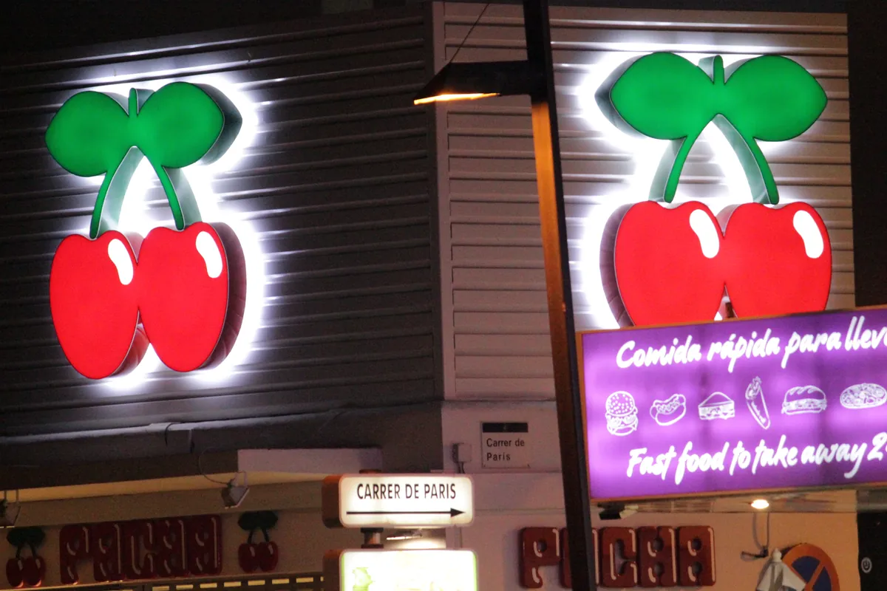
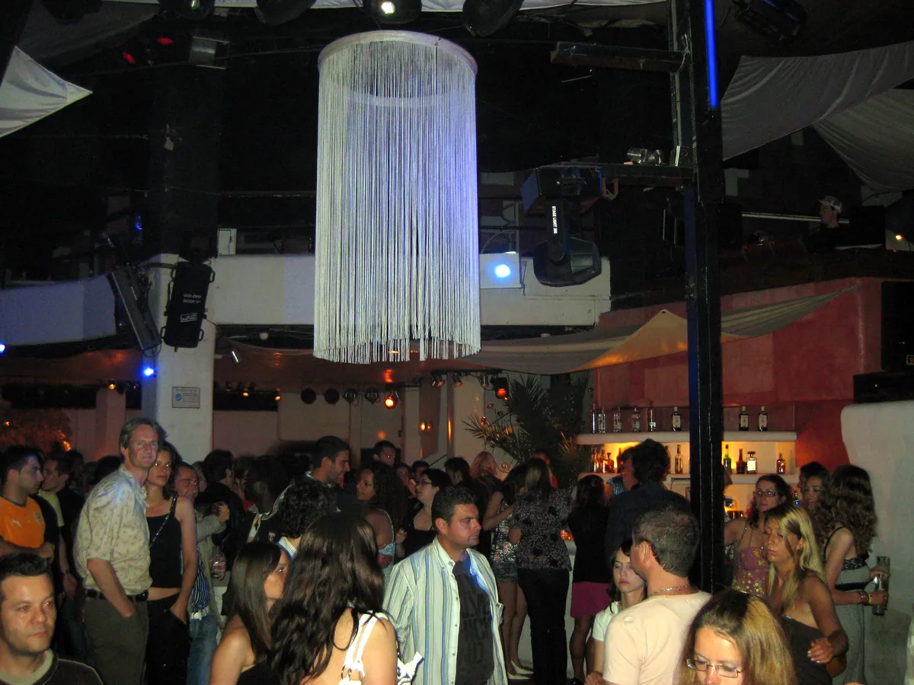
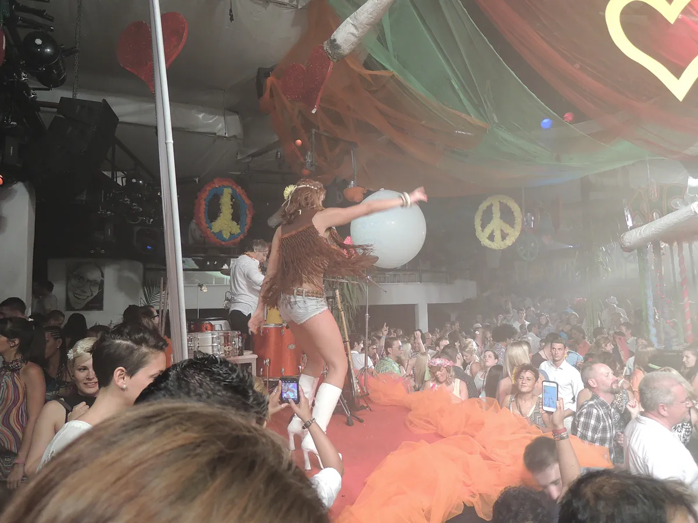

Club guide, Ibiza
Pacha Ibiza: tickets, dress code and calendar 2026
The Ibiza Town club with the cherry logo: what tickets cost, what the door allows, how the 2026 calendar ran, and who owns it now.
One club, several questions.
Searches for Pacha Ibiza, Pacha Ibiza club or just Pacha lead to one venue, but they come from different needs. Some people want to know what to wear. Others want to buy a ticket, book a table, or work out who owns the place now. The club's website answers most of it, spread over several pages.
This guide collects those answers and dates them. It also lists what no source states. For the other rooms on the island there is the Ibiza clubs guide, the open-air club at Platja d'en Bossa has its own page in the Ushuaia Ibiza guide, and for two other famous venues the Berghain guide and the fabric London guide.
Pacha sits alongside 22 other rooms in the best clubs in Europe guide.
What is Pacha Ibiza?
Pacha is a club in Ibiza Town with a long history on the island. Ibiza Spotlight's guide says the story of Pacha on Ibiza starts in 1973, and that Ricardo Urgell opened the first Pacha in Sitges in 1967. The club's own homepage calls it the world's most iconic nightclub.

Ibiza Spotlight describes one Main Room with several side rooms, a rooftop, a garden and an area called Pachacha. Gray Area, which keeps a venue page on the club, names the Main Room, the Funky Room and the Roof Terrace. The club sits in a wider group: pacha.com links to Destino Five Ibiza, Pacha Hotel, Restaurante Pacha, Pacha Icons and the Pacha Collection.
Pacha Ibiza history
Gray Area says the Ibiza club opened in 1973 in a rustic finca surrounded by palm trees, started by Ricardo Urgell and his brother Piti. Ibiza Spotlight dates the opening night to June 1973 and says it took 40,000 pesetas. Gray Area adds that in 1983 the DJ booth was turned to face the dance floor. Ibiza Spotlight says the booth is mounted on wheels today. It also reports a sell-out crowd of 3,795 at the reopening in 2022.
Pacha Ibiza cherries
The two cherries are the club's logo and show on the building at night. Ibiza Spotlight says the logo was inspired by the make-up of Carmen Sevilla, a Spanish actress. Ibiza Spotlight and Gray Area give different accounts of where the name came from, so this page gives no origin for it.
Pacha Ibiza tickets
Pacha Ibiza tickets are sold through pacha.com, which lists each night with a price range. On 4 October 2026 the homepage gave a range of €30 to €270 for individual events, and the events page showed higher top prices for the biggest closing nights, up to €700. The site does not say what sits inside each range, so read the event page before you buy. Ibiza Spotlight's 2025 guide put tickets at €40 to €100 depending on the night, with more than €100 possible in peak season. The pacha.com tickets address is tickets.pacha@fourvenues.com.
| Item | What pacha.com says |
|---|---|
| Opening hours | The FAQ says the club is open every day from 11pm to close. |
| Last entry | 5am, or one hour before closing. |
| Drinks | The homepage advertises up to 70% off drinks and water when bought online. |
| Shuttle | A club ticket includes a free one way shuttle from San Antonio. |
| Restaurant | Guests who dine at Pacha Restaurant are invited into the club, subject to a minimum spend. |
Ibiza Spotlight says dinner at the restaurant gives free entry afterwards at €90 to €120 per person. That is a third party figure from 2025, so check it with the restaurant.
The shuttle leaves from The Egg on Avenida Doctor Fleming at 22:30, 23:45 and 01:00, with extra runs on some nights. The schedule on the site ended on 11 October 2026. A valid ticket is required and seats are not reserved.
Pacha Ibiza dress code
The official Pacha Ibiza dress code, as written on the club's FAQ, reads: "No person shall be admitted to Pacha wearing beachwear such as bathing suits, flip flops, men vests, nude torsos. Also in the VIP area no person shall be admitted wearing shorts, sportswear such as tracksuits, sport shoes, sweatshirts, caps, etc."

Ibiza Spotlight reads the rule more loosely for general admission, saying shorts, trainers and sunglasses are welcomed there, and that people still tend to dress up. For VIP it says men need long trousers, which can include jeans. It adds that private tables and the area directly behind the DJ booth have stricter codes. Its page on the closing weekend says the VIP rule is strict for beachwear, swimwear and casual sandals. Where the two differ, the club's wording is the one a doorman applies.
Pacha Ibiza 2026
The Pacha Ibiza 2026 season began with the opening weekend and ended with a closing week. Ibiza Spotlight lists the opening weekend as Marco Carola on 24 April, Solomun on 25 April and ANOTR on 26 April. The pacha.com artists page names the 2026 residencies as Solomun+1, Sonny Fodera, Music On presented by Marco Carola, MAU P with Baddest Behaviour, and Flower Power.
On 4 October 2026 pacha.com listed one date after the closing week: Music On New Year's Eve on Thursday 31 December, with Marco Carola, Seth Troxler, Ilario Alicante and Frank Storm, at €60 to €350. It showed no summer 2027 dates. Those usually appear later, so this page will need a refresh then.
Pacha Ibiza opening party and Flower Power
The opening party is the first weekend of the season. Flower Power is the club's oldest party idea. Gray Area says Piti Urgell created the weekly Flower Power night, celebrating nostalgia for the 1960s and 70s. In 2026 pacha.com lists it as a residency, and the first night of the closing weekend on 10 October carried its name.

Pacha Ibiza events and calendar
The Pacha Ibiza calendar on pacha.com lists every night with its price range, and all the nights below run from 23:00 to 06:00. This is the closing week as read on 4 October 2026, with the lineup as the club shows it.
| Date | Night | Listed on pacha.com | Price range |
|---|---|---|---|
| Sun 4 Oct | Solomun+1 closing party | Solomun, Argia | €65 to €700 |
| Mon 5 Oct | Sonny Fodera closing party | Sonny Fodera, Fatboy Slim, Danny Howard, Saffron Stone | €35 to €285 |
| Tue 6 Oct | Rampa presents Anarchy | Rampa, Sven Väth, JAMIIE | €40 to €450 |
| Wed 7 Oct | Mau P, Baddest Behaviour closing party | Mau P | €30 to €175 |
| Thu 8 Oct | Music On closing party, part 1 | Marco Carola, Michael Bibi, Cloonee, Mason Collective, Frank Storm | €125 to €600 |
| Fri 9 Oct | Music On closing party, part 2 | Marco Carola, Franky Rizardo, East End Dubs, Ilario Alicante, Ale De Tuglie | €270 to €700 |
| Sat 10 Oct | Grand Closing Weekend part 1, Flower Power | Roger Sanchez, MK, LAEET | €35 to €150 |
| Sun 11 Oct | Grand Closing Weekend part 2 | PAWSA, Miguelle and Tons | €85 to €600 |
Ibiza Rocks, in a January 2026 article, says Music On has had its home at Pacha since 2019 and gave the 2026 Friday run as 15 May to 9 October.
Pacha Ibiza closing party
The Pacha Ibiza closing party is not one night. In 2026 it was a run of eight, with each residency taking its own closing night, then the Grand Closing Weekend on 10 and 11 October. Ibiza Spotlight lists Part 1 as Flower Power and Part 2 as curated by PAWSA with Miguelle and Tons.
Pacha Ibiza DJs
The Pacha Ibiza DJs in the table are the ones the club listed on 4 October 2026, and they are only the closing week. For the sound of the room, three sets from the catalogue were filmed at the club. DJ Mag filmed the Vagabundos opening party at Pacha in 2016. Mixmag filmed Sven Väth's Cocoon night at Pacha in 2018, and Solomun with Andhim at Pacha in 2014.
Pacha Ibiza VIP and table
A Pacha Ibiza VIP booking is made through the form on pacha.com or by contacting the VIP team, and the booking page is vip.pacha.com. The VIP page describes premium bottle service and the best seats in the house, at €150 to €700 depending on the night. The homepage says guests receive complimentary drinks equal to the booking value. The site gives no minimum spend or cancellation terms, so ask before you pay.
A Pacha Ibiza table is also the place the stricter dress code applies. Men are asked for long trousers, and sportswear, caps and sports shoes are listed as refused in the VIP area.
Where is Pacha Ibiza?
The Pacha Ibiza address on pacha.com is Avenida 8 de Agosto, 07800 Ibiza, Balearic Islands. Gray Area gives it as Av. 8 d'Agost, 27, Eivissa. Ibiza Spotlight says the club sits on the outskirts of Ibiza Town, on the road to Talamanca, and that it is a leisurely stroll from the Port. The club ticket also covers the San Antonio shuttle described above.
Pacha Ibiza capacity
The Pacha Ibiza capacity is 3,000, according to both Ibiza Spotlight and Gray Area. Pacha.com does not publish a figure. Ibiza Spotlight also reports the 3,795 crowd at the 2022 reopening, so a headline night can exceed the usual number.
Pacha Ibiza owner
The Pacha Ibiza owner is FIVE Holdings, the Dubai based group. In a release read on 4 October 2026, FIVE says it bought The Pacha Group in October 2023 for €302.5 million, including Pacha Ibiza, Pacha New York, Destino Five Ibiza, Pacha Hotel, Toy Room Club, WooMoon Storytellers and the Pacha Collection, with the registered Pacha name and cherry logo. Resident Advisor reported in February 2017 that the group had earlier been sold to Trilantic Capital Partners for €350 million. FIVE says it was founded and chaired by Kabir Mulchandani.
Pacha Ibiza FAQ.
What is the Pacha Ibiza age limit?
The Pacha Ibiza age limit is 18. Pacha.com says all guests must be 18 or older, with no age limit for the restaurant before midnight.
Does Pacha Ibiza have a guest list?
The club's FAQ on pacha.com does not mention a Pacha Ibiza guest list, so this page cannot say whether one exists. Ask the ticket team at tickets.pacha@fourvenues.com before relying on one.
What is the Pacha Ibiza lineup?
The Pacha Ibiza lineup changes by night and is on the events page of pacha.com. The closing week lineup is in the table above.
What time does Pacha Ibiza open?
The FAQ says 11pm every day, and the last entry is at 5am or one hour before closing.
Is there a dress code at Pacha Ibiza?
Yes. No beachwear, flip flops, vests or bare torsos, and a stricter code in the VIP area.
Sources.
- Prices, tickets, hours, age, dress code, last entry, VIP, events and residencies, read on 4 October 2026: pacha.com, FAQ and contact, VIP page, events, artists and shuttle information.
- Capacity, location, dress code notes, history and the cherry logo: Ibiza Spotlight, Insiders' Guide (14 March 2025) and 10 surprising facts (20 July 2023). Closing weekend: Ibiza Spotlight.
- History, rooms, address and the Flower Power party: Gray Area article and venue page.
- 2026 opening weekend and Music On residency: Ibiza Rocks opening weekend (21 January 2026) and Music On (26 January 2026).
- Ownership: FIVE Holdings release (October 2023) and Resident Advisor (3 February 2017).
Continue reading
Read next.
 Rave spots~10 min read
Rave spots~10 min readBerghain: Panorama Bar, Sound and Residents
Berghain explained: the former power station, Panorama Bar upstairs, Halle am Berghain, the Kantine, and the Ostgut Ton label.
Read article → Rave spots~11 min read
Rave spots~11 min readBest Clubs in NYC: Nightclubs for House and Techno, Then and Now
Nowadays, Basement, Public Records, Good Room and Elsewhere: the best clubs in NYC for house and techno now, and the history from the Loft to Output.
Read article → Rave spots~7 min read
Rave spots~7 min readBest Clubs in Tokyo: WOMB, Contact and the Ban on Dancing
WOMB, Contact, Vent and Circus Tokyo: the best clubs in Tokyo for house, techno and bass music, and the 68-year law against dancing that shaped them.
Read article → Rave spots~6 min read
Rave spots~6 min readBest Clubs in Budapest: A38, Instant-Fogas and Turbina
A38's converted cargo ship, the seven rooms of Instant-Fogas and Turbina's techno nights: the best clubs in Budapest now, and the ruin bars several grew out of.
Read article →